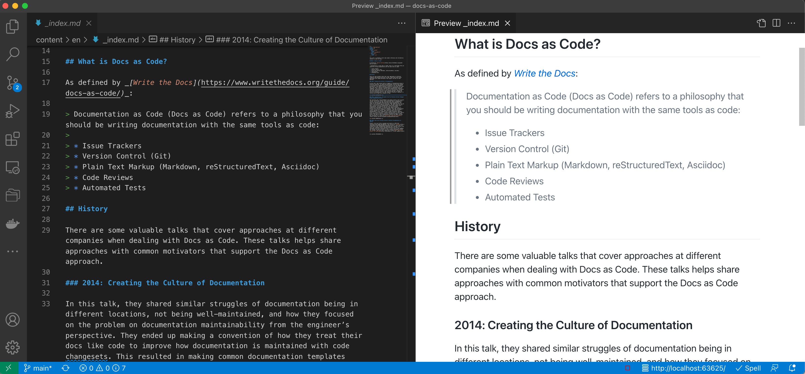

DOCS
AS
CODE
@che55er | che55er.io
About Me


Guides
through drawingsTopics
Fantastic resource 👇

Docs as Code?
Documentation as Code (Docs as Code) refers to a philosophy that you should be writing documentation with the same tools as code.
Source: Write the Docs
Docs as Code uses...
Source: Write the Docs🐞 Issue Trackers
🌳 Version Control (git)
🔤 Plain Text Markup
(Markdown, reStructuredText, Asciidoc)
💬 Code Reviews
✅ Automated Tests
🐞 Issue Trackers
Align tracking the work of documentation with code. (have it live in the same queue)
🌳 Version Control (git)
Enable docs and code to live in same changeset
(like your tests)
Enable concurrent development branches
🌈 Enable all the features of version control for your documentation!
🔤 Plain Text Markup
Enable all the features of your code editors in documentation
(compare, find/replace, track in version control)
🌈 Many editors with preview mode for Markdown as you edit!
💬 Code Reviews
Enable discussions with code using the same toolchain (line-by-line comments, suggestions they can apply, CODEOWNERS)
✅ Automated Tests
Enable static analysis tests on documentation (status checks on pull requests)
Documentation, Disrupted
How Two Technical Writers Changed Google Engineering Culture
Write the Docs (Google, 2015)How we are solving internal technical documentation at Spotify
Write the Docs (Spotify, 2019)Problematic Signals
🏝 Islands of documentation
(MediaWiki, Confluence, Office 365, READMEs, GitHub Pages)
📜 Excessive documentation decay
(possibly caused by islands)
🔍 Searchability challenges
🤷♂️ Different process for maintaining (vs. with code)
😐 Lack of trust on the content
🏝 Islands of documentation
(MediaWiki, Confluence, Office 365, READMEs, GitHub Pages)
📜 Documentation decay due to islands
🔍 Searchability challenges
🏝 Islands of documentation
(MediaWiki, Confluence, Office 365, READMEs, GitHub Pages)
📜 Documentation decay due to islands
🔍 Searchability challenges
🌎 A centralized build system for documentation that can enable content through a common convention
🤷♂️ Different process for maintaining (vs. with code)
🤷♂️ Different process for maintaining (vs. with code)
🧰 Enable documentation to exist closer to the code and toolchain
😐 Lack of trust on the content
😐 Lack of trust on the content
🪄 Make it easy for anyone to contribute
help them along the way, like DocDays!
But, not everyone has GitHub access…
or knows Markdown.
🤷♂️
🧩
Ensure approach aligns with strategy for expected toolchain access
(GitHub Enterprise)
🔤
Illustrate through examples that if you know text,
you can write Markdown
Majority of contributions = textual content, ≠ formatting
🚀
Examples
🔤 Markdown: Authoring
⚙️ Hugo: Generating
👔 Docsy: Theming
⚡️ GitHub Actions: Building
📑 GitHub Pages: Serving
🔤
Markdown
Markdown is a lightweight markup language that you can use to add formatting elements to plaintext text documents. Created by John Gruber in 2004, Markdown is now one of the world’s most popular markup languages.
Source: The Markdown Guide
Editing

Great resource 👇
The world’s fastest framework for building websites
Hugo Features
🦄 Shortcodes
Powerful way to extend beyond Markdown with reusable code blocks
🪴 Multiple Formats
Hugo allows you to output your content in multiple formats...like this presentation
🦥 Flexible
Build different types of content (menus, diagrams) to make a rich website out of Markdown
⚡️ Speed
At < 1 ms per page, the average site builds in less than a second
👔
Docsy Examples
🦄
Shortcodes
Generate API documentation from your OpenAPI (Swagger) specifications.
{{< swaggerui src="/openapi/petstore.yaml" >}}
🧜♀️
Diagrams: Mermaid
```mermaid
graph LR
Start --> Need{"Do I need diagrams"}
Need -- No --> Off["Set params.mermaid.enable = false"]
Need -- Yes --> HaveFun["Great! Enjoy!"]
```

GitHub Actions
Build your docs!
Include in .github/workflows/gh-pages.yaml file.
name: github pages
on:
push:
branches:
- main
pull_request:
jobs:
deploy:
runs-on: ubuntu-20.04
concurrency:
group: ${{ github.workflow }}-${{ github.ref }}
steps:
- uses: actions/checkout@v2
with:
submodules: recursive # Fetch the Docsy theme
fetch-depth: 0 # Fetch all history for .GitInfo and .Lastmod
- name: Setup Hugo
uses: peaceiris/actions-hugo@v2
with:
# Can pin to a specific version if needed, ex:
# hugo-version: '0.79.1'
hugo-version: 'latest'
extended: true
- name: Setup Node
uses: actions/setup-node@v2
with:
node-version: '14'
- name: Cache dependencies
uses: actions/cache@v1
with:
path: ~/.npm
key: ${{ runner.os }}-node-${{ hashFiles('**/package-lock.json') }}
restore-keys: |
${{ runner.os }}-node-
- run: npm ci
- run: hugo
env:
HUGO_ENV: production
- name: Deploy
uses: peaceiris/actions-gh-pages@v3
if: ${{ github.ref == 'refs/heads/main' }}
with:
github_token: ${{ secrets.GITHUB_TOKEN }}
publish_branch: gh-pagesGitHub Actions
Test your docs (spellcheck)!
Include in .github/workflows/validation.yaml file.
name: validation
on:
push:
branches:
- main
pull_request:
jobs:
spell-check:
runs-on: ubuntu-latest
steps:
- uses: actions/checkout@v2
name: Check out the code
- uses: actions/setup-node@v1
name: Run spell check
with:
node-version: "12"
- run: npm install -g cspell
- run: cspell lint --config .github/cspell.json "content/**/*.md"GitHub Actions
✅ Enforce your tests in pull requests
📑
GitHub Pages
⚒️ GitHub Actions build content on PRs and main
🧆 Generate and store static content for serving
🧪
Try it out!
https://cchesser.github.io/docs-as-code/
✍️ Try the Edit this Page link to make a change via a PR
⚙️ See build process on pull request and preview
Recap
📓 Definition and approach
📚 Background of how others have approached it
❤️ Benefits and how it lends to common problems in documentation
🚀 Examples with: Markdown, Hugo, Docsy, GitHub, GitHub Actions, GitHub Pages
Thank You
Thank
You!
@che55er | che55er.io